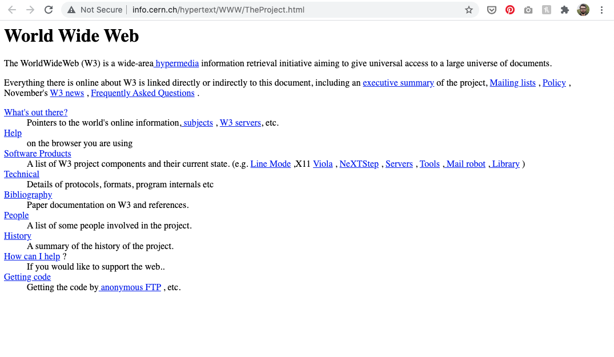

O HTML é uma linguagem de marcação de hipertexto (Hyper Text Markup
Language)
desenvolvida para auxiliar na estruturação e formatação de páginas na web. Ela recebe o
nome de linguagem mas não se trata de uma linguagem de programação como Java,
JavaScript, PHP dentre outras.
Seu funcionamento acontece através da criação de um código fonte com a extenção .html
que é intepretado por um navegador(Browser) que exibe as instrunções na tela do usuário.
Segundo o mdn web docs_ O HTML usa "Marcação" para anotar texto, imagem eO texto que você estar lendo nesse momento foi criando em html, utilizando a marcação,
outros conteúdos para exibição em um navegador da Web.
Cabeça
</head>Corpo
</body>Pé
</footer>
O primeiro site foi ao ar em 6 de agosto de 1991 com o nome de The Project.html sob o
dominio,
info.cern.ch/hypertext/WWW/TheProject.html.
O seu criador foi o físico Tim
Berner-lee quando realizava suas atividades no Centro Europeu de pesquisa Nuclear (CERN),
é considera como sendo o pai do www(World Wide Web).
Imagem do primeiro site que foi ao ar.

O HTML é bastante empregado no desenvolvimento web, mas pode ser aplicado em
em outras vertentes da criação de software combinado com outras tecnologias,
CSS e JavaScript. Segue abaixo a lista de algumas aplicabilidades do HTML.